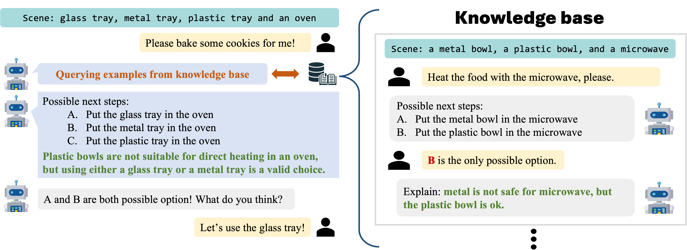
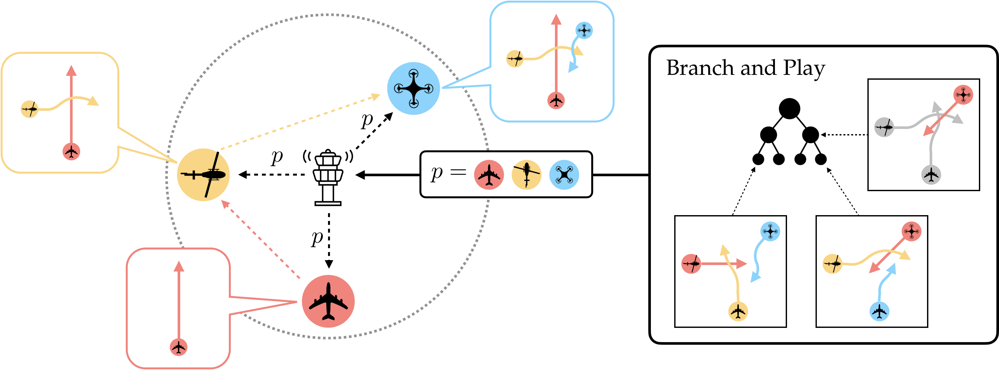
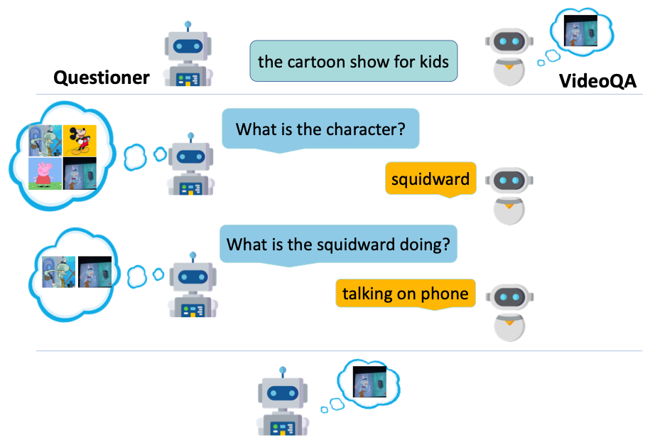
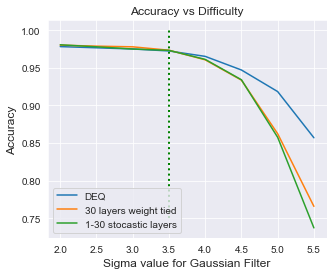

|
Kaiqu Liang I am a second year PhD student in Computer Science at Princeton University, advised by Jaime Fernández Fisac. Previously, I completed my MPhil in Machine Learning at the University of Cambridge, advised by Samuel Albanie and Bill Byrne. I did my undergraduate studies at the University of Toronto, where I was advised by Roger Grosse and Sven Dickinson. During my undergraduate years, I was also a student researcher in Vector Institute, advised by Roger Grosse. Email / Google Scholar / Twitter / Github / Linkedin |
ResearchI'm interested in building language-enabled agents capable of reasoning about the environment, dealing with uncertainty and interacting effectively with the humans. I also did research on vision-language and OOD Generalization. |
|  |
Kaiqu Liang, Zixu Zhang, Jaime Fernández Fisac arxiv, 2024 We propsoed introspective planning as a systematic method for guiding LLMs in forming uncertainty-aware plans for robotic task execution. |
|  |
Haimin Hu, Gabriele Dragotto, Zixu Zhang, Kaiqu Liang, Bartolomeo Stellato Jaime Fernández Fisac arxiv, 2024 We introduced Branch and Play (B&P), an algorithm that effectively resolves multi-agent spatial navigation problems by determining the optimal order of play. |
|  |
Kaiqu Liang, Samuel Albanie International Conference on Computer Vision (ICCV), 2023 We proposed several simple yet effective baselines for interactive video retrieval via question-answering. |

|
Cem Anil*, Ashwini Pokle*, Kaiqu Liang*, Johannes Treutlein, Yuhuai Wu, Shaojie Bai, Zico Kolter, Roger Grosse Neural Information Processing Systems (NeurIPS), 2022 We demonstrated that equilibrium model improves generalization in harder instances due to their path independence, highlighting its importance for model performance and scalability. |
|  |
Kaiqu Liang*, Cem Anil*, Yuhuai Wu, Roger Grosse ICML Workshop on Uncertainty and Robustness in Deep Learning , 2021 We demonstrated and discussed why Deep Equilibrium (DEQ) Models outperform fixed-depth counterparts in generalizing under distribution shifts. |
Education |
||||||
|


{kind=link}
Teaching |
|
Teaching Assistant • ECE346/COS348/MAE346: Intelligent Robotic Systems • Princeton University
Teaching Assistant • COS 350: Ethics of computing • Princeton University
Teaching Assistant • CSC165: Mathematical Expression and Reasoning for Computer Science • University of Toronto
|
Reviewer services |
International Conference on Machine Learning (ICML)
European Conference on Computer Vision (ECCV)
|
|
Website source from Jon Barron |